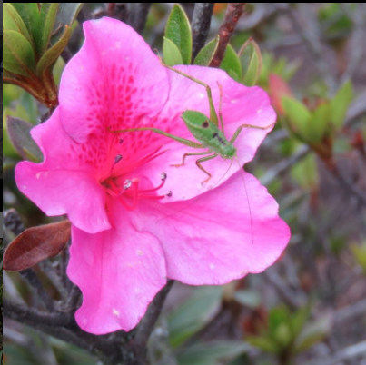
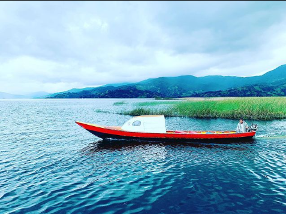

1. Natural Parks
The Laguna de la Cocha is located in the village El Encano 20 kilometers away from Pasto-Colombia. This is home to mammals such as mountain tapir, northern pudu and spectacled bears, and bird species like grebes, golden peck duck, snipes, and andean ducks.

2. Fishing
In Laguna de la Cocha , everything is absolutely interesting and worth seeing, from its history, to its incredible landscapes. Among the activities you can do is hiking, a boat tour and rainbow trout fishing.

3. Photos
If you decide to take pohots, you are going to see the most amazing landscapes, that resembles a small Venice. You can also go to La Corota Island, from which you can observe the reed aquatic ecosystem. And of course, watch the fauna and flora of the place.